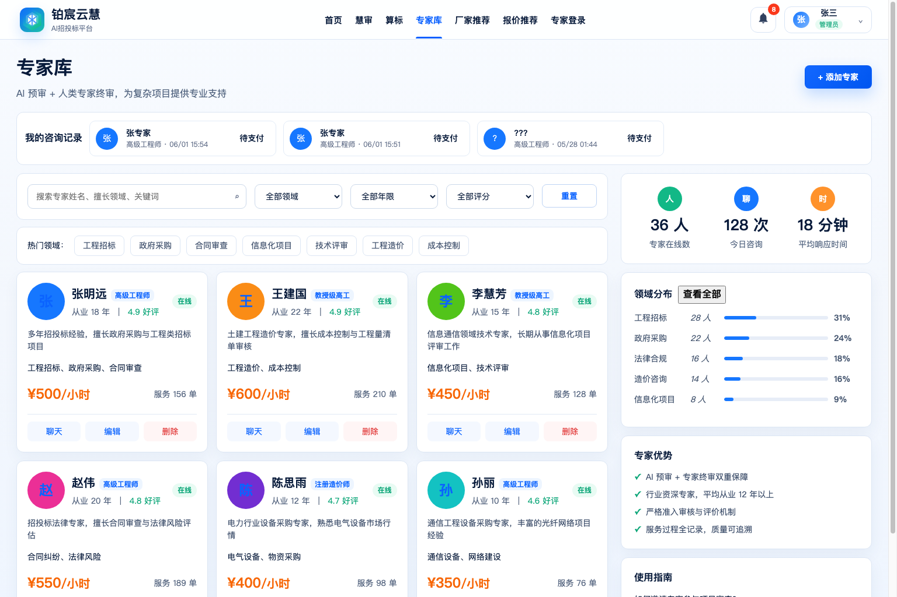

IMAGE TO UI
真实案例 / 专家库页面
同一张原型图，为什么结果差这么多？
普通还原能做出页面，但更像重新设计；调用 image2-ui-code-restorer 后，结构更接近原型。
输入原型
STEP 1 / 原型图
先确定还原目标：不是美化，是复原信息结构
原型图
筛选区专家领域、年限、评分、费用必须保留
主列表专家头像、标签、价格、操作核心模块
右侧栏统计、分布、优势、指南结构锚点
STEP 2 / 普通还原
普通版本：完整，但像重新做了一套
普通还原

导航新增顶部导航和咨询记录条结构偏移
头像真实头像变字母头像资产丢失
数据价格、服务单、评分被改写语义变化
SKILL WORKFLOW
STEP 3 / 技能还原
技能版本：更像按截图拆模块后复原
技能还原
骨架标题、筛选、列表、右栏都在更接近
资产专家头像继续保留更真实
右栏统计、分布、优势、指南顺序接近更稳
RESULT / 三图同屏
真正差距：不是审美，而是结构忠实度
原型
普通：更像重做
技能：更像复原
TAKEAWAY
这条案例能怎么讲？
公开结论普通还原更像重新设计可以说
公开结论技能还原更接近原型结构可以说
不要过度承诺当前仍有视口、字号、数据误差别说 1:1
GITHUB / 教程入口
完整素材已经整理成 GitHub 案例
包含原型图、普通还原图、技能还原图、分析 JSON、对比报告和发布文案。
评论「教程」获取完整流程
适合 AI 生图到前端、截图还原、产品 Demo 快速起稿。
github.com/7tr75bcfv6-ops/image2-ui-code-restorer
核心表达：技能版不是更会美化，而是更会按原型结构复原。BILIBILI 16:9